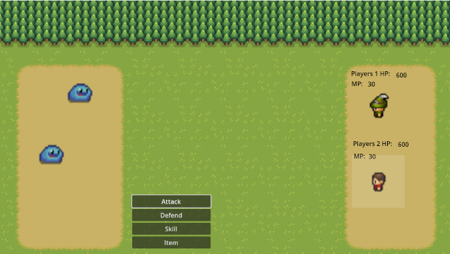

Turn-Based RPG
Status: Working On
Summary
A turn-base RPG video game like Final Fantasy 4-9. It was made using Godot game engine using GDScript scripting language. This is my first attempt at making a game like this.
Technology Used
- Engine: Godot
- Language: GDScript
- Sprites: Mystic Woods, Survival Game Godot 4 Series Art
Conquered Challenges
- Active turn-based combat
- Battle menu navigation
- Item management
- Modular code
- Handling skills
- Equipment management
Updates
9/2/2024
Turn-based RPGs are my favorite game genre. I grew up on SNES and PS1 Final Fantasy games. Two of the major game ideas I have are turn-based RPGs. So, this is my first attempt at making one. This one is going to be closer to a game like Mario RPG. Where it's not too hard but hopefully the music and story is top notch! I will do a full write up at some point in the future when it's further along. But to give a small snip it the battle system by far has been one of the most complex things I've coded to this day.
2/19/2025
I didn't have much time to work on this for a while so when I did have the time, I could not remember how everything worked together for the battle system. So, after hours of going through the code, I figured it out and found ways I could make it better. A lot of work happened on the backend so to player nothing has changed. I have included a repository showing the difference between the codes.